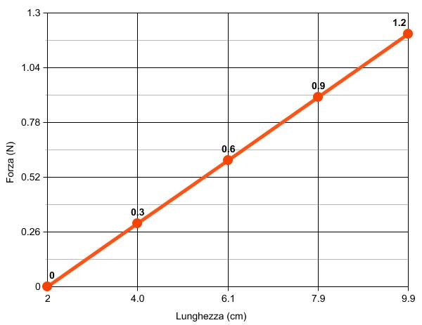

Forza elastica e geometria analitica
Dipendenza lineare
In questa sezione andremo a generalizzare la relazione di proporzionalità diretta, partendo proprio dagli esempi che abbiamo visto nelle sezioni precedenti. In base a quanto abbiamo visto, due grandezze A e B si dicono direttamente proporzionali se A = k · B, dove k è una certa costante di proporzionalità. Come esempio, abbiamo detto che la forza F applicata a una molla e l'allungamento x prodotto sulla molla sono grandezze direttamente proporzionali. Il diagramma cartesiano associato è una semiretta passante per l'origine. Supponiamo invece di voler disegnare il grafico della forza-peso in funzione della lunghezza finale lf della molla e non del suo allungamento x. Siccome x = lf - li avremo che la relazione di proporzionalità diretta F = k · x diventa: F = k · (lf - li) = k · lf - k · li.
Qual è la rappresentazione grafica della precedente relazione matematica? Ricordiamoci che il grafico della forza applicata in funzione dell'allungamento x è una semiretta passante per l'origine. Ora la lunghezza finale della molla è la somma della lunghezza iniziale della molla e del suo allungamento, in formule lf = x + li. Siccome ad ogni valore dell'allungamento x presente nel grafico forza - allungamento dobbiamo sommare la lunghezza iniziale li della molla per avere la lunghezza finale lf, avremo che il grafico risulta traslato di una quantità fissa pari alla lunghezza iniziale li della molla. Per fissare le idee supponiamo che li = 2.0 cm. A tutte le celle della prima riga della tabella allungamento - forza dobbiamo sommare la lunghezza iniziale della molla. Otteniamo così:| lf (cm) | 2.0 | 4.0 | 6.1 | 7.9 | 9.9 |
| F (N) | 0 | 0.3 | 0.6 | 0.9 | 1.2 |
La rappresentazione grafica della precedente tabella è la seguente:

La retta che abbiamo ottenuto ha la stessa pendenza della retta forza - allungamento, ma non passa più per l'origine. Il suo punto di partenza è infatti il punto P = (2.0, 0) avente per ascissa la lunghezza iniziale della molla. In questi casi non possiamo più parlare di proporzionalità diretta: infatti il rapporto tra la forza F e la lunghezza finale lf non è più uguale a una costante. In altre parole, se raddoppiamo la forza non è più vero che raddoppia la lunghezza finale della molla e viceversa. In questi casi si parla di dipendenza lineare fra le due grandezze fisiche forza e lunghezza della molla.